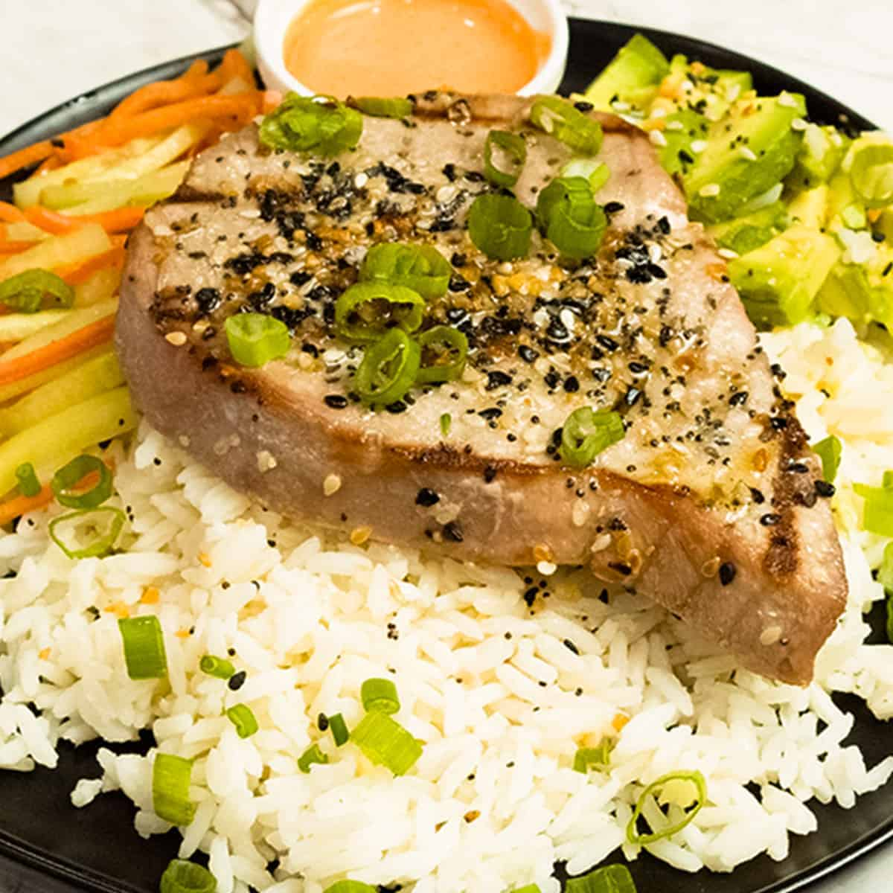

Yellowfin Tuna

Description
Experience a delicious seared yellowfin tuna recipe, where tender tuna steaks are marinated in a blend of vegetable oil, soy sauce, fresh lemon juice, Dijon mustard, grated lemon peel, and crushed garlic. Garnished with lemon wedges, this dish offers a perfect balance of savory, tangy, and citrus flavors for an elegant meal.
Ingredients
- 4 (6 ounce) yellowfin tuna steaks
- 1/2 Cup vegetable oil
- 1/3 Cup soy sauce
- 1/4 Cup fresh lemon juice
- 2 Teaspoons dijon mustard
- 1 Teaspoon grated lemon peel
- 1 Clove garlic, crushed
- 4 Wedges lemon, for garnish
Steps
- Prick tuna steaks all over with a fork and place in a shallow glass baking dish.
- Whisk together oil, soy sauce, lemon juice, Dijon mustard, lemon peel, and garlic in a bowl; pour over tuna steaks. Cover the dish with plastic wrap and refrigerate for 1 to 3 hours
- Preheat the grill to medium heat and lightly oil the grate.
- Remove tuna from marinade; shake excess marinade from steaks and transfer to a plate.
- Pour marinade into a small saucepan; bring to a boil. Reduce heat to medium-low and simmer marinade for 10 minutes.
- Cook tuna on the preheated grill, basting with boiled marinade, until cooked through, 5 to 6 minutes per side. Serve with lemon wedges.